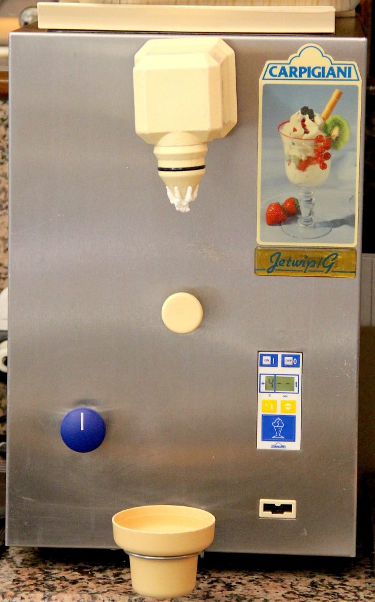
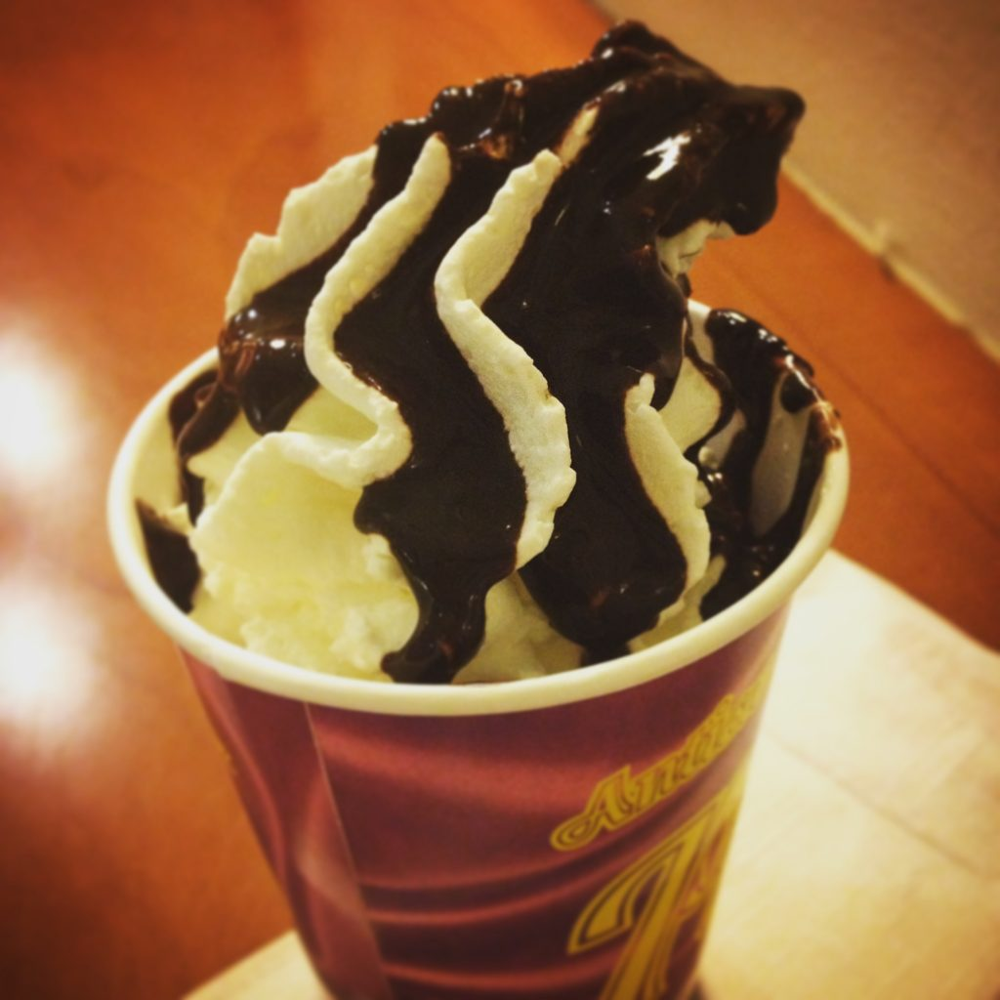

In Italy, every gelateria has either a machine to make whipping cream (panna) or cream already whipped and displayed like regular gelato in the big containers. You can order a cup or a cone of your favorite ice cream and then add some whipping cream on top. You can also ask for some syrup (chocolate, cherry, crème caramel, etc.) to be added on top of your amazing “gelato con panna” (ice cream with whipping cream).
In my hometown, Trieste, this is called berlina and it has whipping cream on the bottom, gelato in the middle, more whipping cream, and finally syrup on top. {This is an excerpt from chapter 4 “Gelaterie and coffeehouses” of the eBook “Italy from the Inside. A native Italian reveals the secrets of traveling in Italy”. Buy our eBook on Amazon and leave us a review! If it’s good, you’ll make us happy, if it’s bad, you’ll make us improve. Thank you either way!}